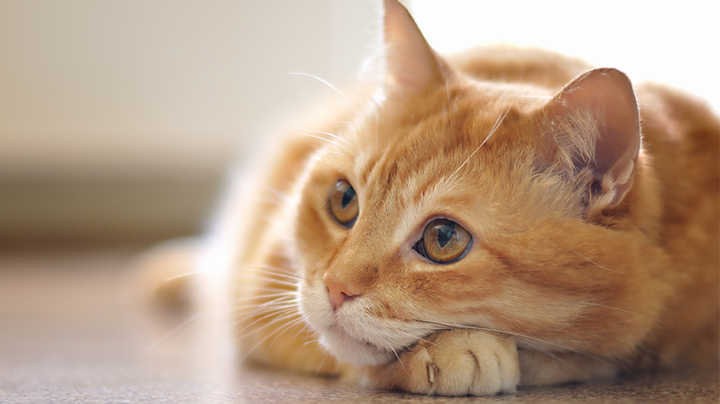

Por eu amo gatos?

- São higiênicos.
- Não mastigam tudo que vê.
- Quando querem, são muito fofos.
- Finge que não te escuta quando você briga.
- Não preciso de mais motivos para amar gatos.
Depoimento de pessoas que também amam gatos:
"Na verdade sou eu mesma na minha própria página, mas se eu chamasse meu irmão, ele diria
coisas incríveis sobre gatinhos. Gatos são fodas."
Daniela Peruzza.
Nomes das gatinhas mais lindas do mundo todinho:
- Luna
- Julieta (ft. Aslã)
Voltar